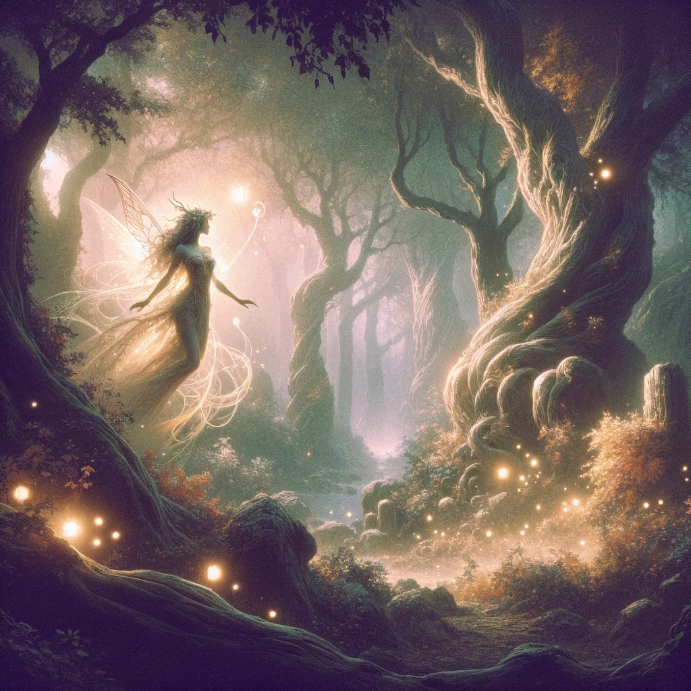

Description
The Dryads are a mystical race of tree-dwelling creatures who are deeply connected to the magic of nature. They are known for their beauty and their grace, and they are respected by all who know them.
Dryads are small and slender, with delicate features and long, flowing hair that is often adorned with flowers and leaves. They have pointed ears and large, almond-shaped eyes that sparkle with magic.
Dryads are deeply connected to the trees that they call home, and they are able to manipulate the magic of nature to their advantage. They are skilled in healing and can use their magic to heal themselves and their allies.
In battle, Dryads are elusive and nimble, and they are able to evade their enemies with ease. They are also skilled in using their magic to create illusions and manipulate the minds of their enemies.
Despite their mystical nature, Dryads are also known for their kindness and their compassion. They live in harmony with the animals and the plants of the forest, and they are deeply connected to the magic of the land.
The Dryads are a peaceful and serene race, and they are respected by all who know them. They are a force for good in the world, and they will stop at nothing to protect the magic of nature and the creatures that call it home.
Traits:
- Illusionary Magic: Dryads are skilled in using their magic to create illusions and to manipulate the minds of their enemies. They have a +2 bonus to Intelligence and can use their illusions to confuse and distract their enemies.
- Tree Stride: A Dryad can step into and out of any living tree large enough to fit them in its trunk. You may stay there indefinitely, or you may use 10 feet of movement to appear inside another tree that can fit you up to 60 feet away. Any damage dealt to a tree while you are inside it is also dealt to you. If the tree is cut down, killed, or otherwise destroyed while you are inside it, you are forcibly expelled from it and take 10d10 force damage.
- Nimble: Dryads are small and nimble, and they are able to evade their enemies with ease. They have a +2 bonus to Dexterity and can use their agility to dodge attacks and to move quickly and quietly.
- Fey Nature: Your creature type is fey instead of humanoid. You cannot be charmed, and magic can't put you to sleep.
- Healing Magic: Dryads are skilled in healing magic, and they can use their magic to heal themselves and their allies. They have a +2 bonus to Wisdom and can use their healing magic to endure even the toughest battles.
- Base Speed: 30ft
- Size: 3-4ft; Small
- Languages: Common, Elvish, Sylvan